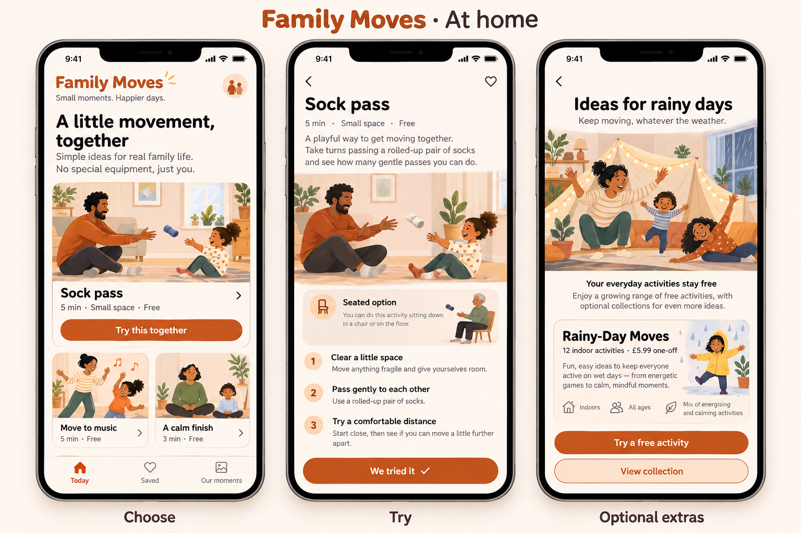
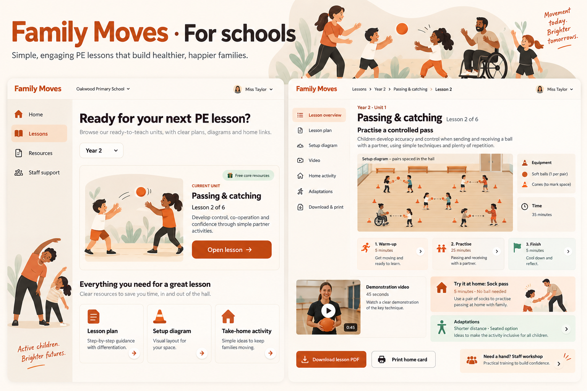
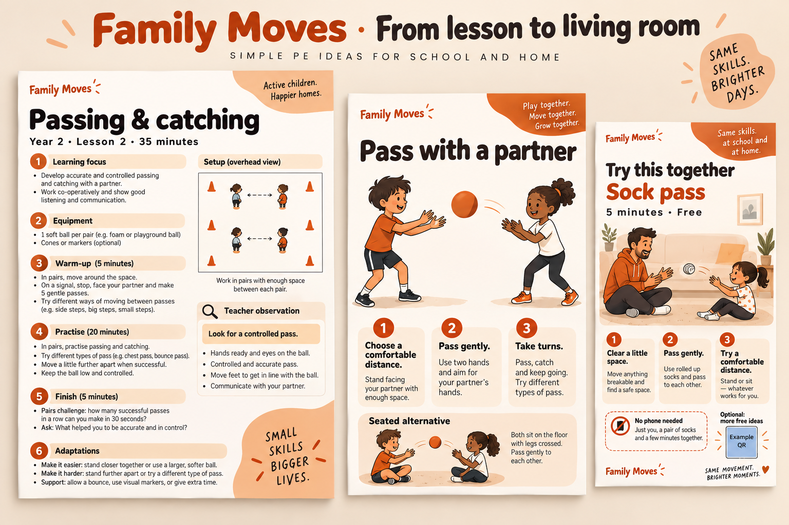

A helpful suggestion, not a list of jobs.
Today, Saved and Our moments keep navigation small. The home activity opens directly; an adult can explore optional collections after experiencing the free offer.

One featured five-minute idea and two alternatives reduce the effort of deciding.
Text and illustrations make the activity usable without a compulsory video or timer.
A one-off collection has a clear adult-facing price. Everyday activities remain free.
Ready to teach, ready to share.
Year group and lesson sequence lead the interface. A short demonstration supports delivery, while printable plans and home cards keep the lesson practical.

Organise by year, unit and learning objective. Show the next lesson and useful resources.
Setup, equipment, cues and adaptations sit alongside the lesson, with optional short video.
Print a matching card in one step. Paid staff support is separate from usable free lessons.
A lesson plan, a station card, a home invitation.
Three formats for three situations: preparation and delivery, independent activity prompts, and a family invitation that still works without a phone.

Clear lesson structure, setup diagram and observation cue. Digital essentials stay free.
Large movement illustration and short prompts, with inclusive participation choices.
Five-minute instructions and household equipment. Optional digital continuation, no app required.